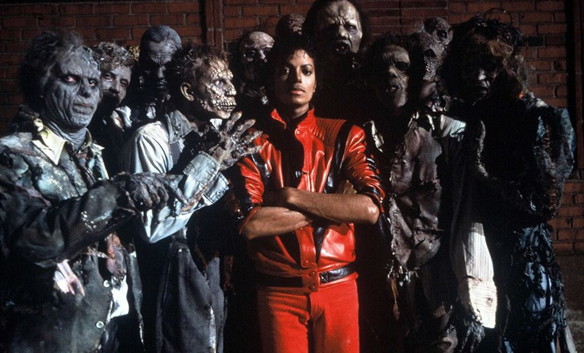

La Historia del "Rey del Pop"
Primeros años
Michael Joseph Jackson nació en Gary, Indiana, el 29 de agosto de 1959. Sus padres se llamaban Joseph y Katherine. Su padre fue miembro del grupo de música "The Falcons", y tocó como guitarrista. A su madre también le apasionaba la música, y solia tocar canciones country junto con sus hermanas. De esta manera, Michael Jackson y sus hermanos, muy influenciados por sus padres, fueron aficionados a la música desde muy pequeños. Ya en 1963 Michael Jackson demostró sus condiciones especiales para la música, y cantó un tema de la serie "Sonrisas y lágrimas". De esta manera, los hermanos Jackson se unieron para formar "Jackson Five", y su padre, que conocia perfectamente el potencial de sus hijos dejó su trabajo para dedicarse a ser el representante de sus hijos. Muy pronto, en 1970, se convirtieron en una de los grupos más vendedores, con éxitos como "I want you back".
Primer álbum

Michael Jackson en 1971 grabó su primer álbum como solista, "Got to be there". Por aquel entonces sólo contaba con trece años, pero su primer disco fue todo un éxito, al igual que su segundo disco, "Ben". En 1973 grabó "Music and me", y dos años después "Forever". La popularidad de Michael Jackson habia declinado un poco, así que decidió regresar con sus hermanos para sacar de nuevo a flote al grupo, que ahora ya sólo se llamaba "The Jacksons", los cuales recuperaron la popularidad perdida con nuevos temas compuestos por ellos.
"Thriller" el disco más vendido de la Historia
Pero el punto en que su carrera pasa de ser buena, a convertirse en uno de los mitos de la música pop y de la música en general fue en 1982, con su álbum "Thriller".Es difícil explicar el éxito tan rotundo que obtuvo, pero si nos ceñimos a los números veremos que ha conseguido vender casi 50 millones de copias, el disco más vendido de todos los tiempos, éxito que hoy en dia aún perdura, y sigue en aumento el número de copias vendidas. Número 1 en todos los paises, consiguió 12 nominaciones a los premios Grammy en la gala del 28 de Febrero de 1984, consiguiendo 8 premios. Los 7 singles realizados alcanzaron todos ellos el Top 10 de las lista norteamericanas, llegando a ser, dos de ellos, números 1.
